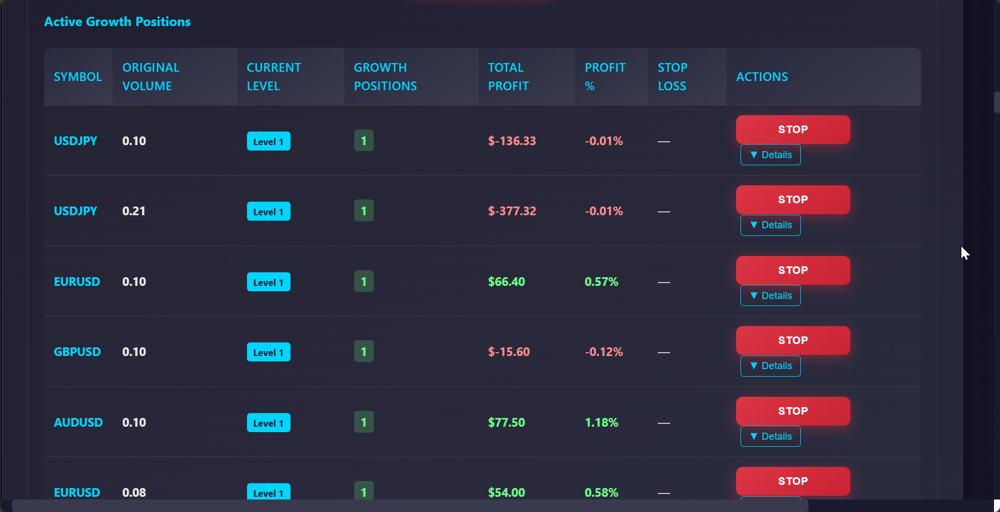
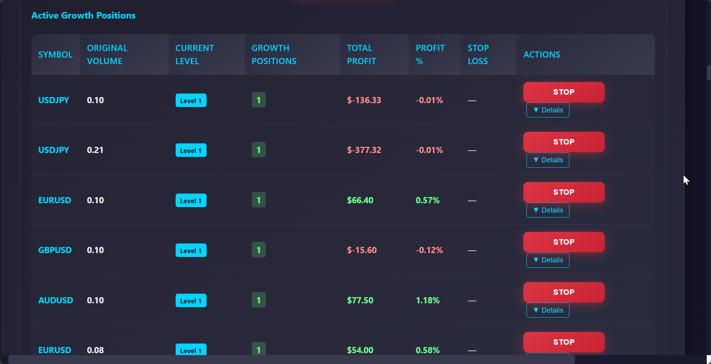

graph TB
%% External Systems
MT5A[MetaTrader 5
Account A
üìä Source Account]
MT5B[MetaTrader 5
Account B
üìà Target Account]
WebDash[Web Dashboard
üñ•Ô∏è Real-time Interface]
%% Core System Components
subgraph "AI Trade Manager Core System"
subgraph "Web Layer"
Flask[Flask Web Server
üåê REST API & UI]
HTMX[HTMX Integration
⚡ Real-time Updates]
end
subgraph "AI & Analytics Engine"
AICore[AI Evaluation Engine
ü§ñ ML Models]
MLModels[Machine Learning
üìä Scikit-learn]
FeatureEng[Feature Engineering
üîß Technical Indicators]
ModelTraining[Model Training
üìö Continuous Learning]
end
subgraph "Trading Engine"
TradeManager[Trade Manager
⚙️ Execution Logic]
CopyEngine[Copy Engine
üîÑ Account Sync]
GrowthManager[Growth Manager
üìà Position Amplification]
OrderExecution[Order Execution
⚡ MT5 API Calls]
end
subgraph "Risk Management"
RiskEngine[Risk Assessment
üõ°Ô∏è Multi-layer Controls]
PositionSizing[Position Sizing
üìè Dynamic Calculations]
ExposureControl[Exposure Control
⚖️ Limits & Correlations]
VolatilityFilter[Volatility Filter
üìä Market Conditions]
end
subgraph "Monitoring & Control"
SystemMonitor[System Monitor
üëÅÔ∏è Health Checks]
ConnectionMgr[Connection Manager
üîó MT5 Connectivity]
AlertSystem[Alert System
üö® Notifications]
PerformanceTracker[Performance Tracker
üìà Metrics Collection]
end
subgraph "Data Management"
DataProcessor[Data Processor
üîÑ Real-time Processing]
StateManager[State Manager
üíæ Position Tracking]
ConfigManager[Config Manager
⚙️ Settings & Rules]
end
subgraph "Storage Layer"
CSV[CSV Files
üìÑ Trade Logs]
JSON[JSON Storage
üì¶ Configuration]
LogFiles[Log Files
üìù System Events]
TempState[Temporary State
⚡ Runtime Data]
end
end
%% Data Flow Connections
MT5A --> |Position Data
Order Updates| DataProcessor
DataProcessor --> |Trade Signals| AICore
AICore --> |Evaluation Results
Confidence Scores| RiskEngine
AICore --> |ML Predictions| TradeManager
RiskEngine --> |Risk Assessment
Position Limits| TradeManager
TradeManager --> |Trade Commands| CopyEngine
CopyEngine --> |Execute Orders| OrderExecution
OrderExecution --> |API Calls| MT5B
MT5B --> |Position Feedback
Execution Status| SystemMonitor
SystemMonitor --> |Status Updates| Flask
Flask --> |Real-time Data| WebDash
%% Growth Management Flow
SystemMonitor --> |Position Monitoring| GrowthManager
GrowthManager --> |Growth Decisions| TradeManager
GrowthManager --> |Amplification Rules| PositionSizing
%% AI Training Flow
DataProcessor --> |Historical Data
Market Features| FeatureEng
FeatureEng --> |Processed Features| ModelTraining
ModelTraining --> |Updated Models| MLModels
MLModels --> |Predictions| AICore
%% Risk Management Flow
DataProcessor --> |Market Data| VolatilityFilter
VolatilityFilter --> |Volatility Metrics| RiskEngine
PositionSizing --> |Size Calculations| ExposureControl
ExposureControl --> |Exposure Data| RiskEngine
%% Monitoring & Alerts
SystemMonitor --> |Health Status| AlertSystem
PerformanceTracker --> |Performance Data| AlertSystem
ConnectionMgr --> |Connection Status| SystemMonitor
AlertSystem --> |Alerts & Notifications| Flask
%% Configuration & State
ConfigManager --> |Risk Parameters| RiskEngine
ConfigManager --> |AI Settings| AICore
ConfigManager --> |Growth Config| GrowthManager
StateManager --> |Position State| TradeManager
StateManager --> |Account State| SystemMonitor
%% Data Persistence
DataProcessor --> |Trade Data| CSV
ConfigManager --> |Configuration| JSON
SystemMonitor --> |System Events| LogFiles
StateManager --> |Runtime State| TempState
%% Bi-directional Connections
Flask <--> |Configuration
Management| ConfigManager
Flask <--> |State Queries
Updates| StateManager
HTMX <--> |Real-time Updates
User Interactions| Flask
%% Styling
classDef external fill:#1e3a8a,stroke:#3b82f6,stroke-width:2px,color:#fff
classDef aiComponent fill:#065f46,stroke:#10b981,stroke-width:2px,color:#fff
classDef tradingComponent fill:#7c2d12,stroke:#ea580c,stroke-width:2px,color:#fff
classDef riskComponent fill:#7c1d6f,stroke:#d946ef,stroke-width:2px,color:#fff
classDef monitorComponent fill:#1e40af,stroke:#3b82f6,stroke-width:2px,color:#fff
classDef dataComponent fill:#374151,stroke:#6b7280,stroke-width:2px,color:#fff
classDef storageComponent fill:#451a03,stroke:#a16207,stroke-width:2px,color:#fff
classDef webComponent fill:#134e4a,stroke:#14b8a6,stroke-width:2px,color:#fff
class MT5A,MT5B,WebDash external
class AICore,MLModels,FeatureEng,ModelTraining aiComponent
class TradeManager,CopyEngine,GrowthManager,OrderExecution tradingComponent
class RiskEngine,PositionSizing,ExposureControl,VolatilityFilter riskComponent
class SystemMonitor,ConnectionMgr,AlertSystem,PerformanceTracker monitorComponent
class DataProcessor,StateManager,ConfigManager dataComponent
class CSV,JSON,LogFiles,TempState storageComponent
class Flask,HTMX webComponent
System Architecture Overview
Comprehensive technical workflow showing AI evaluation engine, multi-account synchronization, risk management, and real-time monitoring components
 
